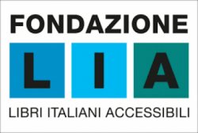
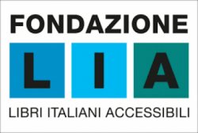

Making the Web work
The World Wide Web Consortium (W3C) develops standards and guidelines to help everyone build a web based on the principles of accessibility, internationalization, privacy and security.
Read more about W3C
Working with stakeholders of the Web
A range of organizations join the World Wide Web Consortium as Members to work
with us to drive the direction of core web technologies and exchange ideas with industry
and research leaders. We rotate randomly a few of our Member organizations' logos underneath.
The Web Consortium and its members, with help from the public and the web community, focus on
a range of business ecosystems that the Web transforms, including E-commerce, Media & Entertainment,
Publishing and several other areas.
 

W3C TPAC 2023
The W3C annual conference is an important event for
the Web community. TPAC gathers in a single event the W3C
Members and Boards, W3C Working and Interest Groups meetings,
and a series of one-hour sessions brought by the attendees.
This well-attended and popular event is an important
means for W3C to coordinate solutions to technical issues that
transcend group borders.
Watch our short video to learn more about TPAC.

Web Standards
Web standards are the building blocks of a consistent digitally connected world.
They are implemented in browsers, blogs, search engines, and other software that power
our experience on the Web.
W3C is an international community where Member, a full-time staff,
and the public work together to develop web standards

Get involved
W3C works at the nexus of core technology, industry needs, and
societal needs. Everyone can get involved with the work we do.
There are many ways individuals and organizations can participate
in the Web Consortium to advance web standardization.
Latest news
Latest entries from across our News Press Releases or Blog.
Draft Note: Vision for W3C
The Vision attempts to help the world understand what W3C is, what it does and why that matters; and in particular to articulate the principles by which it operates and that guide its decisions.
News
Securing the Web forward: Addressing developer concerns in web security
A recent survey affirms the need to drive developer awareness and adoption of Web security standards & practices.
Blog
- Home
- Contact
- Help
- Sponsor
- Donate
- Privacy Policy
- Legal
- System Status


Copyright © 2023 World Wide Web Consortium. W3C® liability, trademark and permissive license rules apply.